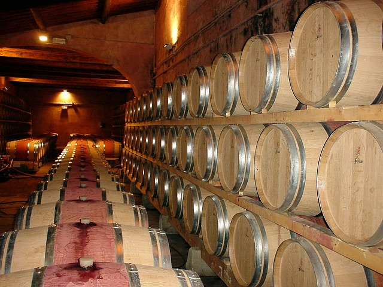
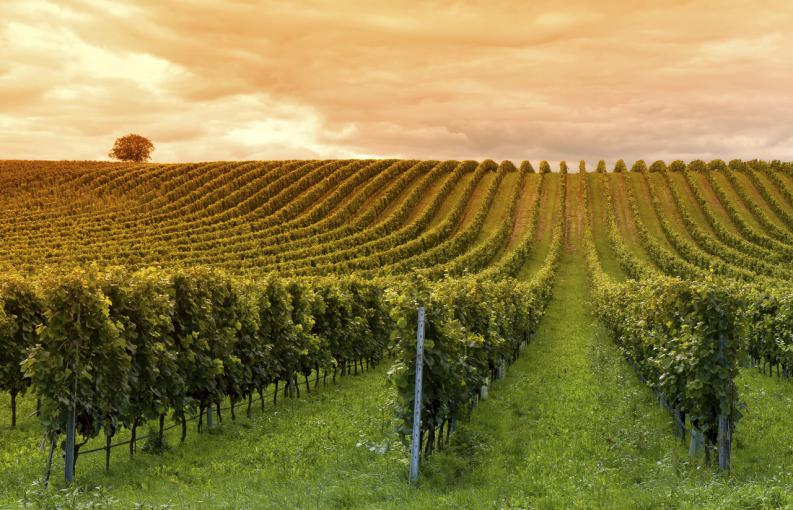
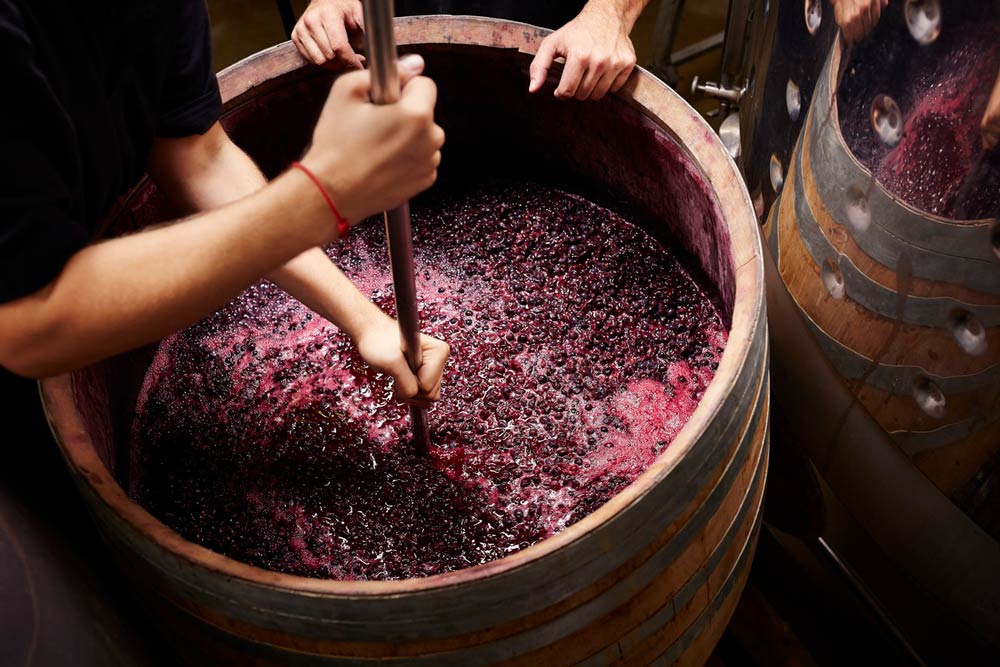
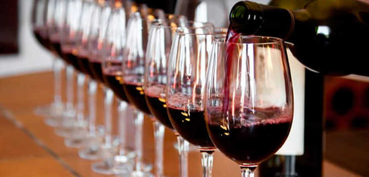
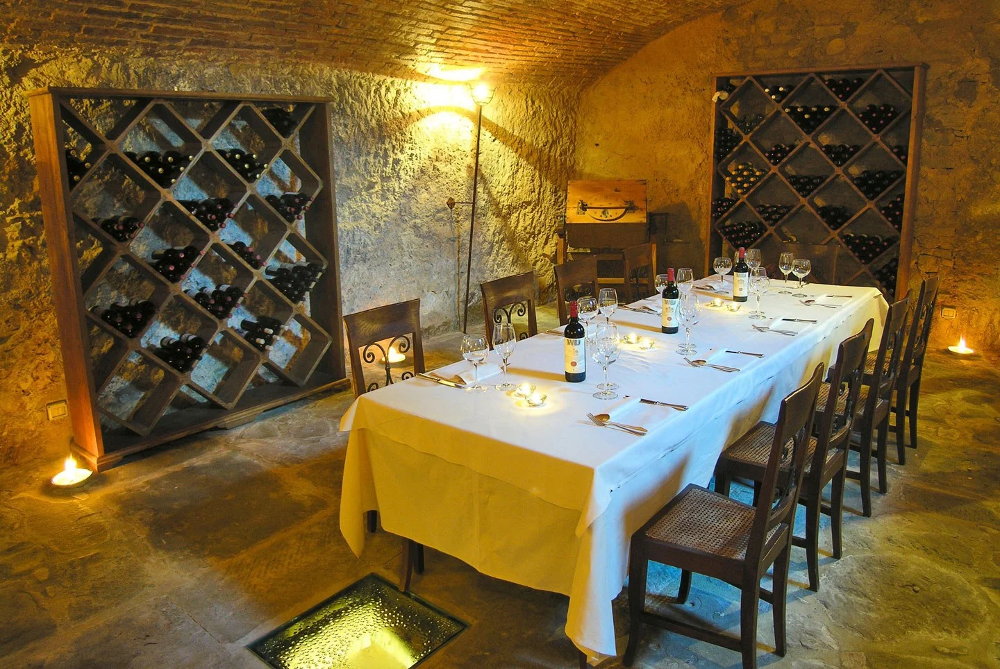

Historia y Tradición: Casa Boher es una bodega con una rica historia que se remonta a sus humildes comienzos en la región de Mendoza, Argentina. Fundada por la familia Boher en 1999, esta bodega se ha convertido en un símbolo de calidad y dedicación a lo largo de los años. Su compromiso con la excelencia y la tradición vitivinícola se refleja en cada botella que producen.

Viñedos de Excelencia: Los viñedos se encuentran en una ubicación privilegiada en la región de Luján de Cuyo, en Mendoza. Esta zona es conocida por su clima óptimo y suelo fértil, lo que crea las condiciones ideales para el cultivo de uvas de calidad superior. Las cepas cuidadosamente seleccionadas, como Malbec, Cabernet Sauvignon, Chardonnay y Pinot Noir, se cultivan con dedicación y respeto por la naturaleza.

El Arte de la Elaboración: El proceso de elaboración del vino es un verdadero arte. Cada etapa, desde la vendimia manual hasta la fermentación y el envejecimiento en barricas de roble francés, se realiza con precisión y pasión. Los enólogos expertos de la bodega combinan la tradición con técnicas innovadoras para crear vinos de carácter único y distintivo. Cada botella es un testimonio del esmero y la atención meticulosa que se dedica a cada detalle.

Vinos Emblemáticos: Los vinos de esta bodega son reconocidos por su calidad excepcional y su expresión auténtica del terruño argentino. Desde su icónico espumante "Casa Boher Brut" hasta sus elegantes y potentes tintos como "Gran Reserva Malbec" y "Gran Reserva Cabernet Sauvignon", cada vino tiene su propia personalidad y encanto. Ya sea que estés buscando un vino para una ocasión especial o simplemente para disfrutar en una reunión informal, Casa Boher tiene una opción perfecta para ti.

Hospitalidad y Experiencias: La bodega no solo ofrece vinos excepcionales, sino también una experiencia única para los amantes del vino. Su hermosa bodega cuenta con espacios acogedores para degustaciones y visitas guiadas, donde podrás sumergirte en el mundo de Casa Boher, aprender sobre su proceso de elaboración y saborear sus vinos en un entorno encantador. Además, la cálida hospitalidad del equipo de Casa Boher hará que tu visita sea inolvidable.
